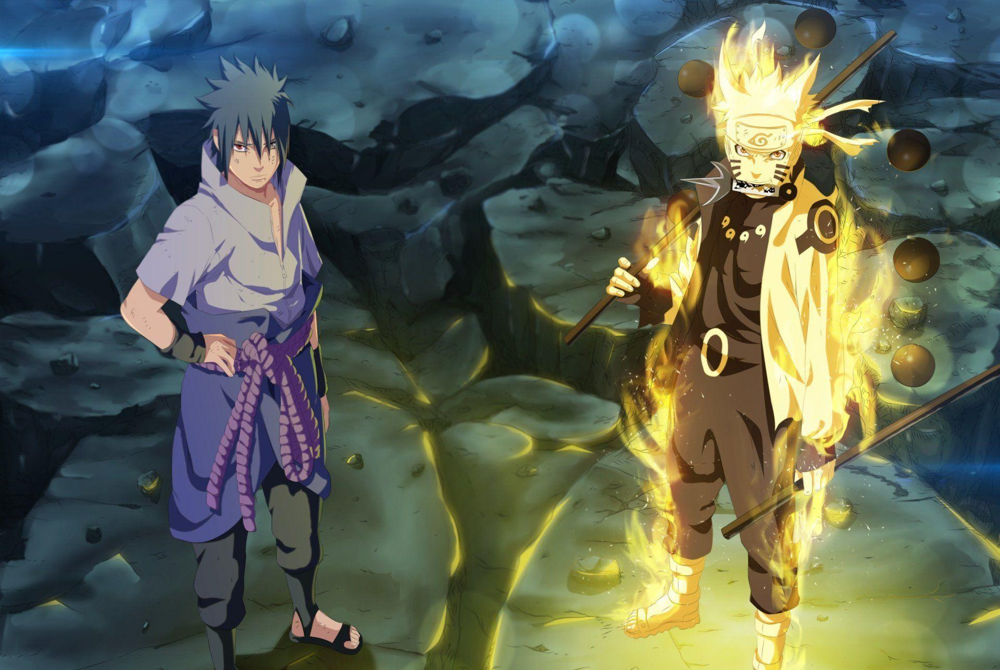

About Ralph
Naruto is one of the strongest shinobis in Konoha. His parents died in his fight against Kurama, the Kyuubi, and made him his jinchūriki. He then trained to overpower Sasuke. These two become as strong as the Sage of Six Paths and fight Kaguya. He has and will go on more adventures.
Naruto and Sasuke in the Sage of Six Paths mode when fighting Kaguya and Uchiha Madara.
About Naruto
- The number one most unpredictable ninja.
- Can take out an entire army.
- He shares the power of the Sage of Six Paths with his "brother" Sasuke.
- He never leaves a team memeber behind.
- He is the jinchūriki of the Kurama.
Naruto's Friends
Naruto's friends are his greatest strenths. he considers Sasuke as his brother and Eureka Sensei has his older brother. He also has other close friends like shikamaru and Sakura and is supported by the whole village of Konoha. click on the links below to read more about them.